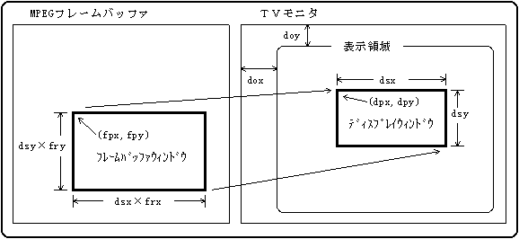
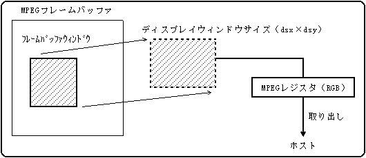
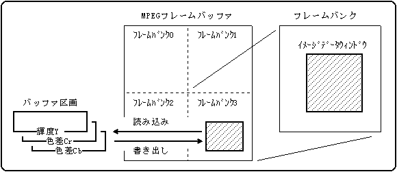
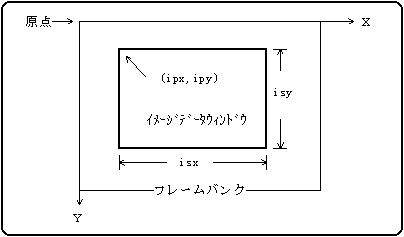
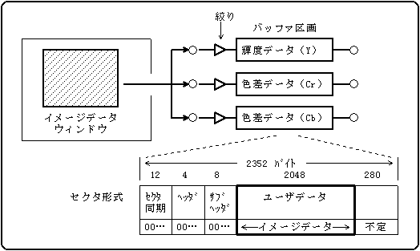
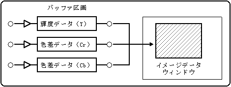
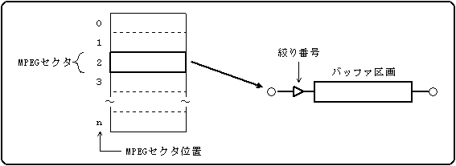
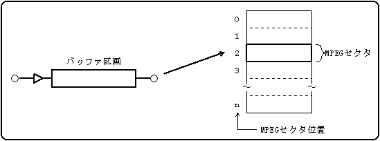

★PROGRAMMER'S GUIDE
★CD通信I/F(MPEGパート)
★PROGRAMMER'S GUIDE
★CD通信I/F(MPEGパート)
図6.1 フレームバッファウィンドウとディスプレイウィンドウ

フレームバッファウィンドウの左上座標（CDC_MpSetWinFpos）
フレームバッファウィンドウの拡大率 （CDC_MpSetWinFrat）
ディスプレイウィンドウの左上座標（CDC_MpSetWinDpos）
ディスプレイウィンドウのサイズ （CDC_MpSetWinDsiz）
ＴＶモニタ上の表示領域の位置 （CDC_MpSetWinDofs）
図6.2 イメージデータの取り出し

図6.3 イメージデータの読み込み・書き出し

イメージデータウィンドウの左上座標（CDC_MpSetImgPos）
イメージデータウィンドウのサイズ （CDC_MpSetImgSiz）
図6.4 イメージデータウィンドウ

図6.5 イメージデータウィンドウからの読み込み

図6.6 イメージデータウィンドウへの書き出し

図6.7 MPEGセクタバッファからの読み込み

図6.8 MPEGセクタバッファへの書き出し

| 関数名 | MPEG動作モード | 画像データの出力先 |
|---|---|---|
| CDC_MpGetImg | - | VDP2出力 |
| CDC_MpReadImg,CDC_MpWriteImg | 静止画再生モード以外 | - |
| CDC_MpReadSct,CDC_MpWriteSct | MPEGセクタバッファモード以外 | - |
★PROGRAMMER'S GUIDE
★CD通信I/F(MPEGパート)